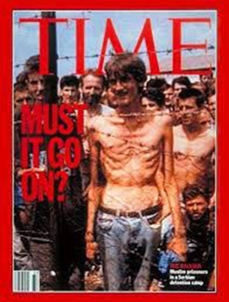
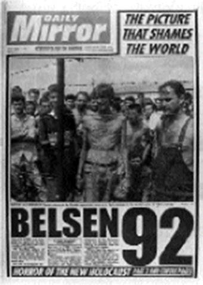
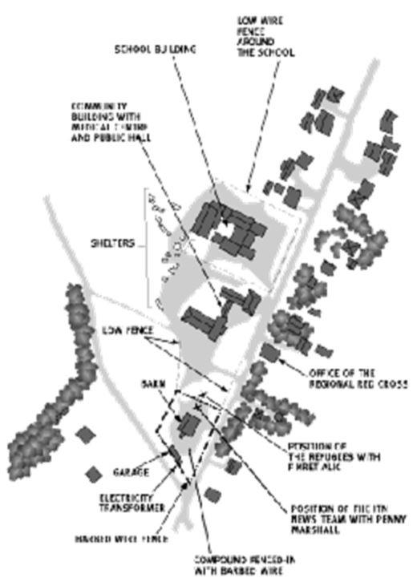

La photo qui est apparu dans plusieurs tabloïds reproduits sur la page de garde est celle de Fikret Alic, un musulman bosniaque. Émacié et dénudé jusqu’à la taille, il semble apparemment emprisonné derrière une clôture de barbelés dans un camp des Serbes de Bosnie à Trnopolje.
La photo a été prise à partir d’une bande vidéo réalisée le 5 août 1992 par une équipe de télévision britannique, primée, dirigée par Penny Marshall d’ITN. Marshall était accompagnée de son caméraman Jeremy Irvin, de Ian Williams de Channel 4 et du journaliste Ed Vulliamy du journal The Guardian.
Pour beaucoup, cette image est devenue un symbole des horreurs de la guerre de Bosnie − « Belsen ’92’ », comme un journal britannique a sous-titré la photographie. 1. Mais cette image est trompeuse. Le fait est que Fikret Alic et ses compatriotes musulmans bosniaques n’ont pas été emprisonnés derrière une clôture de barbelés. Il n’y avait pas de barbelés autour du camp de Trnopolje.
Ce n’était pas une prison, et certainement pas un « camp de concentration », mais un centre de transit pour les réfugiés. Beaucoup y sont allés à la recherche de sécurité et pouvaient repartir s’ils le souhaitaient.
Les barbelés sur la photo ne sont pas autour des musulmans bosniaques, MAIS autour du caméraman et des journalistes. Ils faisaient partie d’une clôture en fil de fer barbelé qui entourait une petite enceinte située à côté du camp de Trnopolje. L’équipe de presse britannique a filmé de l’intérieur de ce complexe, filmant les réfugiés et le camp à travers la clôture. Aux yeux de ceux qui les ont vues, les images qui en ont résulté ont laissé la fausse impression que les musulmans de Bosnie étaient enfermés derrière des barbelés.
 Plan du site de Trnopolje, basé sur la photo satellite américaine, 2 août 1992, trois jours avant l’arrivée des journalistes britanniquesQuelles qu’aient pu être les intentions de l’équipe de presse britannique, leurs images ont été vues dans le monde comme la première preuve tangible des camps de concentration en Bosnie. « La preuve : derrière les barbelés, la vérité brutale sur la souffrance en Bosnie », annonçait le Daily Mail à côté d’une reproduction en première page de l’image de Trnopolje : « Voici le genre de scènes qui scintillent dans les films en noir et blanc sur les camps de concentration nazis il y a cinquante ans. » 2
À l’occasion du premier anniversaire des photos, un article de The Independent pouvait encore utiliser les barbelés pour faire le lien avec les Nazis : « La caméra remonte lentement le long des os du torse du prisonnier. C’est l’image de la famine, mais ensuite nous voyons les barbelés contre sa poitrine et c’est l’image de l’Holocauste et des camps de concentration. » 3
Penny Marshall, Ian Williams et Ed Vulliamy n’ont jamais parlé de camp de concentration concernant Trnopolje.
Partager cette page